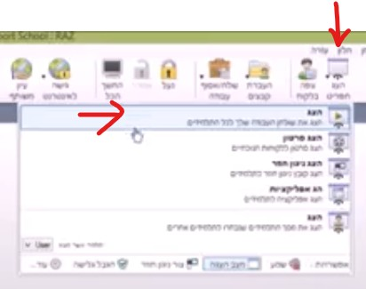
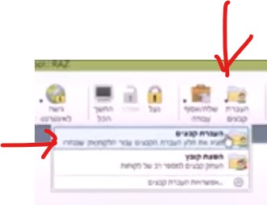
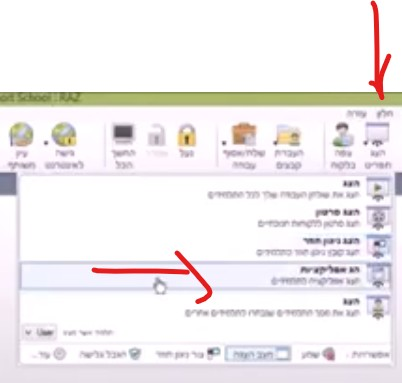

שלב 0: פתיחת התוכנה והמסך הראשי
0.1 הפעלה ובחירת ממשק
1. לחץ לחיצה כפולה על האייקון הזה:
2. בחירת רמת הכלים: בחר את האפשרות האמצעית (עיקרית) להצגת הכלים הרלוונטיים ביותר.
0.2 הכרת המסך הראשי וסרגל הכלים
לאחר הבחירה, ייפתח המסך הראשי של NetSupport. רוב הכלים החשובים מרוכזים בסרגל הכלים העליון. כל אחד מהכפתורים שלהלן יכוסה במדריך זה:
(הריבוע האדום מסביב לתמונה נועד להדגיש את סרגל הכלים העיקרי)
1. ניטור: צפייה במסכי התלמידים
המטרה: לדעת במבט חטוף שכל התלמידים מרוכזים ועובדים במה שצריך.
- שלב מקדים: אם איבדת את תצוגת המסכים, לחץ על סמליל הבית/כיתה (בבר הצדדי הימני) כדי לחזור למסך הראשי המציג את כל התלמידים.
- במסך הראשי: התבונן בתצוגת התמונות הממוזערות ("Thumbnail View"). כל תמונה קטנה מציגה את מה שקורה בזמן אמת על מחשב של תלמיד.
- לצפייה מקרוב: אם תלמיד נראה מוסח, לחץ לחיצה כפולה על התמונה שלו. המסך שלו ייפתח בגודל מלא ותוכל לראות בדיוק מה קורה.
2. הדגמה: הצג את המסך שלך
המטרה: להדגים פעולה או להציג תוכן לכל הכיתה בו-זמנית.
- הכן את התוכן: ודא שמה שאתה רוצה להראות מופיע על מסך המורה שלך.
-
התחל שידור: חפש בסרגל הכלים את הכפתור שכתוב עליו "Show" או "הצג מסך המורה" (לרוב עם סמל של מקרן/מסך). לחץ עליו.

- הפסק: לאחר סיום ההדגמה, לחץ שוב על אותו כפתור כדי להחזיר לתלמידים שליטה על המחשבים שלהם.
3. משמעת: נעילת מסכי התלמידים
המטרה: לקבל תשומת לב מלאה ומיידית מהכיתה.
-
לחץ על מנעול: חפש בסרגל הכלים כפתור עם סמל של מנעול או הכיתוב "Lock" (נעילה) או "Blank Screen".


- מה קורה: מסכי התלמידים יחשיכו או יציגו הודעה, והמקלדת והעכבר שלהם יינעלו.
- שחרור: כדי לפתוח את המסכים ולחזור לעבודה, לחץ שוב על אותו כפתור המנעול.
4. פוקוס: הגבלת אינטרנט או יישומים
המטרה: למנוע גלישה לאתרים מסיחים (משחקים, רשתות חברתיות).
- כפתור ההגבלה: חפש כפתור עם סמל של גלובוס או "Internet Restriction" או "Application Control".
- הגבלת גלישה פשוטה: בחר באפשרות "Block all websites" (חסום את כל האתרים), או "Allow only these websites" (אפשר רק אתרים ספציפיים).
- איפוס: בסיום המשימה, זכור לכבות את ההגבלה כדי לאפשר לתלמידים לעבוד כרגיל בשיעור הבא.
5. תקשורת: צ'אט ושליחת הודעות
המטרה: לתקשר עם תלמיד ספציפי או עם כל הכיתה ללא צורך לדבר בקול רם.
- הודעה כללית לכיתה: חפש כפתור "Send Message" (שלח הודעה). הקלד הודעה קצרה (למשל: "יש עוד 10 דקות") והיא תופיע על כל המסכים.
- צ'אט פרטי: לחץ לחיצה ימנית על התמונה הממוזערת של התלמיד ובחר "Chat" (צ'אט). ייפתח חלון שיחה פרטי ביניכם.
6. ניהול חשמל: כיבוי והדלקה מרחוק
המטרה: לנהל את המחשבים בכיתה לפני השיעור ובסופו, כדי לחסוך זמן וחשמל.
- כיבוי: בחר את התלמידים הרצויים (או את כל הכיתה), וחפש את כפתור "Shutdown" (כיבוי) או "Power" בסרגל הכלים.
- הדלקה (Wake-Up): אם המחשבים כבויים, חפש את כפתור "Wake Up" או סמל של ברק. לחיצה עליו תשלח פקודת הדלקה (דורש הגדרה תקינה ברמת הרשת).
- כלי עזר: ניתן גם להשתמש באותה קבוצת כפתורים כדי לבצע Restart (אתחול) או Logoff (יציאה מהמשתמש).
7. שיתוף: העברת קבצים (שליחה ואיסוף)
המטרה: לשלוח חומרים נדרשים במהירות, ולקבל בחזרה את עבודות התלמידים בצורה מסודרת.
-
כפתור העברה: חפש בסרגל הכלים את כפתור "File Transfer" (העברת קבצים), לרוב עם סמל של תיקייה או מסמכים.

- לשליחת קבצים (Delivery): גרור את הקבצים הדרושים מחלון המורה אל התיקייה הרצויה במחשבים של התלמידים.
- לאיסוף עבודות (Collection): סמן את קובץ העבודה במחשב של התלמיד, ולחץ על כפתור "Get" או גרור אותו בחזרה למחשב המורה.
8. פתיחה מהירה: שליחת אתר אינטרנט
המטרה: להבטיח שכל התלמידים נמצאים באותו עמוד אינטרנט בדיוק, באופן מיידי.
- כפתור ההפעלה: חפש בסרגל הכלים את הכפתור "Launch Website" או "Open URL" (לרוב עם סמל של חץ או קישור).
- הכנס כתובת: הקלד או הדבק את כתובת האתר המלאה (למשל: `https://www.google.com`).
- שלח: לחץ על 'שלח' או 'הרץ'. הדפדפן ייפתח אוטומטית אצל התלמידים בעמוד ששלחת.
9. שיתוף עבודות: הצגת מסך תלמיד לכל הכיתה
המטרה: לאפשר לתלמיד להדגים עבודה, פתרון מוצלח או שאלה לכל הכיתה (שידור הפוך).
- איתור התלמיד: ודא שהתלמיד מציג את העבודה שברצונך לשתף בתצוגה הממוזערת.
-
שידור: לחץ לחיצה ימנית על התמונה הממוזערת של התלמיד, ובחר "Show Student Screen" (הצג מסך תלמיד) - או השתמש בכפתור "Show" הראשי ובחר את האפשרות המתאימה:

- תוצאה: המסך של התלמיד ישודר אוטומטית למחשב המורה (ומשם למקרן) וכן לכל שאר מסכי התלמידים בכיתה.
- סיום: לחץ שוב על כפתור השידור (או 'Stop') כדי להפסיק את ההצגה ולשחרר את השליטה.